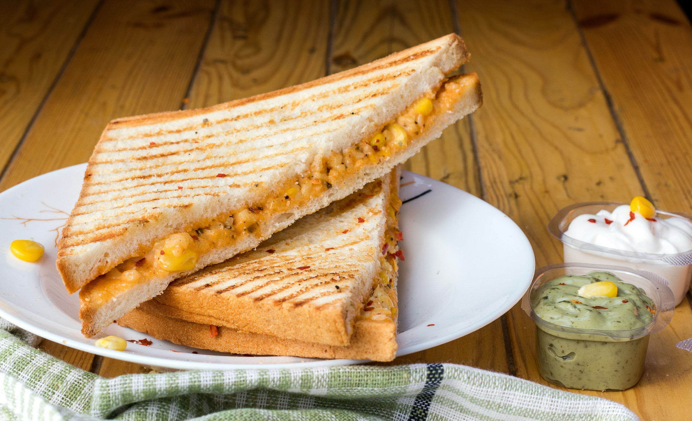

Cheese Sandwich Recipe

A delicious cheese sandwich
To make a classic grilled cheese sandwich, spread a thin, even layer of softened butter on one side of two slices of sandwich bread.
Place one slice, buttered-side down, into a cold skillet, then layer two to three slices of your favorite melting cheese—such as Cheddar, American, or Swiss—right on top.
Cap it with the second piece of bread, buttered-side facing up. Turn the stove to medium-low heat and cook the sandwich for about 3 to 4 minutes per side, flipping carefully once the bottom turns a deep, golden brown and the cheese begins to melt down the edges.
Ingredients
The Foundation
- 2 slices of Bread: Thick-cut white bread, sourdough, or brioche work best.
- 1-2 tbsp Butter: Softened to room temperature so it spreads easily without tearing the bread.
The Cheese
- 2-3 slices (about 2 oz) of Cheese: A mix of sharp cheddar (for flavor) and American or Monterey Jack (for that perfect, gooey melt).
Step-by-step guide for making the cheese sandwich
- Butter the Bread: Spread a thin layer of softened butter on one side of both slices of bread.
- Assemble in the Pan: Place one slice buttered-side down in a skillet over medium-low heat. Layer the cheese on top, then add the second slice buttered-side up.
- Toast the First Side: Cook for 3 to 4 minutes until the bottom bread is golden brown.
- Flip & Finish: Flip the sandwich and cook the other side for 2 to 3 minutes until it is golden and the cheese is fully melted.
- Slice & Serve: Take it out of the pan, slice it in half, and enjoy!
Home